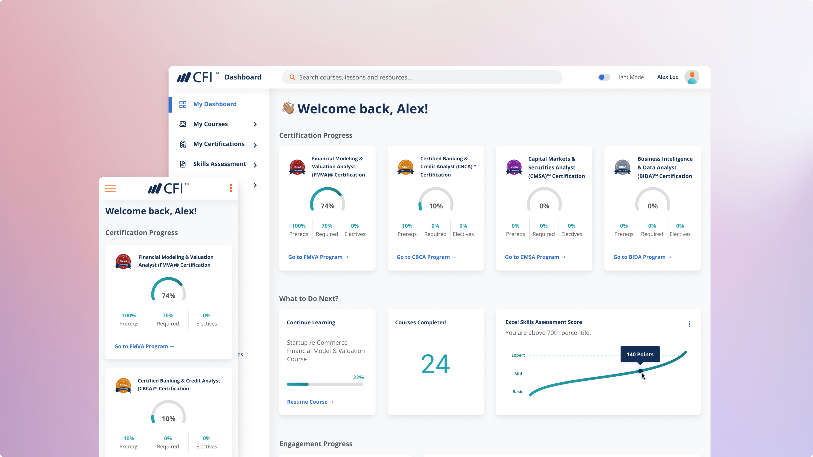

The Corporate Finance Insitute (CFI) is an online provider of financial courses and certifications with more than 1 million students around the world.
During my time at CFI, I was tasked with designing the student dashboard from end to end. The dashboard provides easy access to courses and certification programs. Students can purchase, and enroll in new courses, view lessons and take quizzes, as well as look at their learning progress per course and per program as a whole.
User research, UI/UX design, Wireframing, Prototyping
Figma | Miro | Whimsical | Usability Hub
The goal for the users is to have a platform where they can access courses to improve their skills. This platform should be easy to use, and simple, yet engaging to maximize retention. The user needs include: search for new courses and/or learning resources, enroll in new courses, purchase courses and start learning right away, access to their progress easily, and download transcripts and certificates.
The business goal is to have a platform that can host all courses and certifications, upsell new products, and integrate the dashboard with a shopping cart. Eventually, the dashboard would become a robust product that could be offered and tailored to businesses.
Some gamification features were implemented. In order to motivate the user to keep coming back to the dashboard, we added progress bars and charts, job postings and badges.
The dashboard is the home of our learners, a place to learn, have fun, feel part of a community and discover new things. We want our users to feel proud of their achievements.
The first step was to create a table of contents and ensure all pages followed a clear logic. The next step was to design the dashboard’s side nav menu and top header.
Most of the interface elements had to be created from scratch and later added to our design system. The basic components were created first:
Once we had everything in place, it was time to test the information architecture and UX design.
The entire dashboard was created as a full working prototype using Figma, modals and error alerts were also included.
User case 1: focused on upselling to a new user, this case motivates the user to purchase a course or program.
Sign up → dashboard homepage with 0% progress → navigate to courses → enroll/buy.
User case 2: focused on a returning and experienced user, this case helps them continue where they left off.
Login → dashboard homepage with 40% enrollment → continue certification → complete course.
User case 3: focused on bringing a user that already finished their certification.
Login → dashboard homepage with 100% completion → view upselling of new learning resources → buy new certification.
As part of the design, I wanted to include a dark mode UI. A lot of CFI users are students that work full-time and take the courses during the evening or night. I wanted to ensure the dashboard provided accessibility for this scenario. The dark mode theme was based on Google's material guidelines for dark themes.
After development, the dashboard was implemented to a selected and mixed number of users, later to 50% of users and finally to 100% of users. Throughout each phase, we delivered a user survey to understand how they use it and gather feedback about the dashboard. The feedback was overwhelmingly positive.
“The new dashboard is more robust, and I can navigate to designated areas of the website more efficiently. I am really fond of the way CFI has set this up. Love the dark mode!.”
© 2024 • Bettsina Walkinson • Bettsinawalks